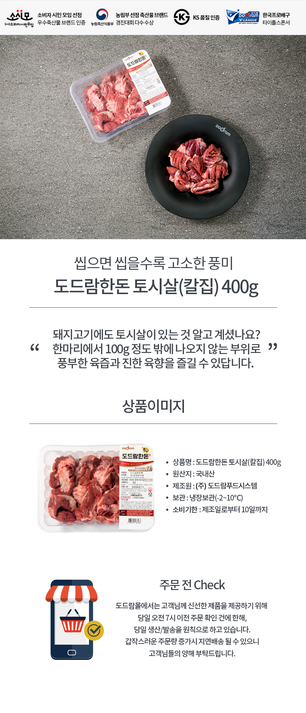

- 상품상세정보
- 배송안내
- 교환 및 반품안내
- 상품후기
- 상품문의
상품상세정보
배송안내
▷ 배송 정보를 변경하고 싶어요. ▶ 송장 등t록 전이면서 오전 7시 이전인 경우 배송 정보 변경이 가능하나, 오전 7시 이후 및 상품 준비 중 단계로 넘어간 경우 배송 정보 변경이 불가합니다. ▷ 다양한 주소지로 상품을 보내고 싶어요. ▶ 장바구니에 상품을 모두 담은 후 결제 단계의 주소 입력 부분에 있는 '복수배송지 이용'버튼을 클릭하여 기입하시면 됩니다. ▷ 택배사는 어디인가요? ▶ 도드람몰은 농협택배(한진택배)를 이용하고 있습니다. ▷ 언제 배송되나요? ▶ 송장번호는 일반적으로 오후 5~6시에 안내되고 있으며, 영업일 기준 오전 7시 이전 결제 완료건에 대하여 당일 출고되오나 도착 예정일은 별도로 안내드릴 수 없으니 참고 부탁드립니다. ▷ 두번 나눠서 주문했는데 한 박스에 배송해 주세요. ▶ 주소지가 같더라도 주문번호가 다를 경우 합배송이 불가합니다. ▷ 다른 날에 받고 싶어요. ▶ 도드람몰에서는 별도의 배송일 지정이 불가합니다. ▷ 주문량이 폭주할 경우 어떻게 되나요? ▶ 일반적인 가공품과는 달리 돈육 상품의 경우 생산량이 정해져있고, 택배 마감 시간이 있기 때문에 하루 출고량이 정해져있습니다. 이에 경우, 출고가 다음 영업일로 이월될 수 있습니다. ▷ 토요일에도 출고가 되나요? ▶ 제품의 신선도를 위하여 토요일, 일요일, 공휴일 전날에는 출고되지 않습니다. 공휴일 전일, 금요일 오전 7시 이후 주문 및 결제 완료 주문 건은 다음 영업일에 출고됩니다. ▷ 펜션으로 받고 싶어요. ▶ 일부 지역, 펜션 등 배송이 어렵거나 택배차 출입이 어려운 지역의 경우 배송 지연이 발생할 수 있으며, 이 경우의 배송 지연에 대해서는 도드람몰에서 책임을 지지 않습니다. 펜션 등으로 택배차 진입 가능 여부 등을 확인하신 다음, 해당 대리점을 통하여 접수 가능 여부 등을 확인 후 주문해 주시기 바랍니다.
교환 및 반품안내
- 정상 제품에 대한 상품 개봉으로 상품 가치 훼손 시에는 상품수령후 7일 이내라도 교환 및 반품이 불가능합니다. - 상품 박스 파손 시 도드람몰로 연락주시면 택배사와 조치하여 교환조치 하도록 하겠습니다. - 저단가 상품, 일부 특가 상품은 고객 변심에 의한 교환, 반품은 고객께서 배송비를 부담하셔야 합니다(제품의 하자,배송오류는 제외) - 일부 상품은 신모델 출시, 부품가격 변동 등 제조사 사정으로 가격이 변동될 수 있습니다. - 신선제품 특성 상 발주 후에는 취소가 불가합니다. - 소비자분쟁해결 기준(공정거래위원회 고시)에 따라 피해를 보상받을 수 있습니다. - A/S는 판매자에게 문의하시기 바랍니다.
환불안내
▷ 교환/환불/반품 1. 배송된 제품의 손상 및 오염의 경우에 한하여, 상품 인도일 이후 3일 이내 교환/환불 가능합니다. 2. 상품의 내용이 표시, 광고된 내용과 다른 경우 재화 등을 공급받은 날로부터 3개월 이내, 또는 그 사실을 안 날 또는 알 수 있었던 날부터 30일 이내에 교환 및 반품이 가능합니다. 3. 도드람몰이 제공한 상세 정보와 상이한 경우 교환/반품/환불이 가능합니다. 4. 개인의 기호에 따른 불만족 또는 단순 변심으로 인한 교환/반품/환불은 접수가 불가합니다. 5. 제품 특성 상 판매자와 협의하에 교환/반품이 가능하며, 협의되지 않은 교환/반품에 대한 비용은 고객님께서 부담하셔야 합니다. 6. 전자상거래 등에서의 소비자 보호에 관한 법률에 의한 반품 규정에 의거 도드람한돈 상품의 경우 교환/반품 시 상품가치가 100% 소멸되는 상품이므로 아래의 경우 반품이 불가합니다. - 이용자에게 책임이 있는 사유로 재화 등이 멸실 또는 훼손된 경우 - 포장이 훼손되어 상품 가치가 상실된 경우 (택이나 라벨이 훼손된 상품 등) - 이용자의 사용 또는 일부 소비에 의하여 재화 등의 가치가 현저히 감소한 경우 - 시간 경과에 의하여 재판매가 곤란할 정도로 재화 등의 가치가 현저히 감소한 경우 7. 오전 7시 이후 주문 취소, 배송지 변경 등의 주문/배송요청은 제한될 수 있습니다. 8. 배송지와 수취인의 연락처 불분명, 수취인 부재 등으로 인하여 발생하는 반송 및 상품 변질에는 책임지지 않습니다. 9. 직장 또는 학교로 수령하시는 경우 배송정책을 꼭 참고하시어 주문하시기 바랍니다. 10. 아래의 경우 구매자는 교환 또는 환불을 요청할 수 있습니다. - 판매자 실수로 주문한 상품과 다른 상품이 배송된 경우 - 객관적 기준에 의한 선도저하 또는 상품불량인 경우 - 판매자 혹은 배송업체 과실로 인한 배송지연이 발생한 경우 - 배송 중 포장이 파손되어 상품의 가치가 하락한 경우 ▷ 기타 1. 무항생제 라인의 경우 원료돈 수급 상황에 따라 결제 완료되었더라도 익일 출고가 불가할 수 있습니다.
주문관련
▷ 주문 완료 후 주문 수량을 추가하고 싶어요. ▶ 무통장입금 전 일 경우 추가가 가능하나 무통장입금 이후를 포함한 결제 완료 단계로 넘어간 경우 취소 후 재주문하거나 해당 건만 별도로 주문해야하며, 이 경우 추가되는 배송비는 환급되지 않습니다. ▷ 전화 주문하고 싶어요. ▶ 전화 주문은 도드람몰 회원에 한하여 제공되며, 전화 주문 시 개인 정보 및 결제 정보를 상담원에게 전달해 주셔야 합니다. 이때, 배송지의 경우 신주소로 전달주셔야 하며, 잘못된 주소 전달로 인해 발생하는 문제는 도드람몰에서 책임지지 않습니다. ▷ 결제 수단을 변경하고 싶어요. ▶ 결제 수단을 변경하고자 하는 경우, 결제 취소 후 재주만하셔야 합니다. 이 경우 품절, 행사 시간 종료 등으로 인해 재주문을 하지 못하는 경우, 도드람몰에서는 책임을 지지 않습니다. ▷ 주문을 취소하고 싶어요. ▶ 주문 취소를 원하시는 경우, 도드람몰 고객센터 또는 1:1 문의 게시판을 통하여 주문번호를 남겨주시면 가능합니다. 단, 오전 7시 이후 상품 준비중 단계로 넘어간 주문 건은 주문 취소 처리가 불가하오니 취소를 원하시는 고객님께서는 빠른 시일내 연락 주시기 바랍니다.
환불관련
▷ 상품이 파손되었어요. ▶ 상품 혹은 박스가 파손된 경우, 도드람몰로 연락 주시면 신속히 처리해드릴 수 있도록 하겠습니다. ▷ 상품을 환불받고 싶어요. ▶ 개인 취향에 의한 환불은 불가합니다. 다만 원물의 지방량 차이가 있기 때문에 과지방 등에 대한 부분은 문의 주시면 품질팀에서 확인 후 연락드릴 수 있도록 하겠습니다.
결제관련
▷ 네이버페이로 결제했는데 주문 건이 조회가 안돼요. ▶ 네이버페이로 결제하시는 경우, 주문 건이 도드람몰로 도달하기까지 10분 가량 소요됩니다. 이에 당일 출고가 불가할 수도 있는 점 참고 부탁드리며, 당일 출고를 원하실 경우 오전 7시보다 여유있게 주문 부탁드립니다. ▷ 돈을 잘못 입금했어요./입금자명을 다르게 입력했어요. ▶ 입금액이 부족한 경우에는 추가 입금해 주시면 되며, 초과 금액 입금 건은 도드람몰 공지사항 내 114번 항목 '[공지사항] 도드람몰 입급계좌 변경 안내 및 자동입금 확인안내'를 확인해 주시기 바랍니다. 입급자명이 다를 경우, 입금하신 날짜/시간대/입금자명/주문 건을 함께 전달 주시면 처리 가능합니다.
상품관련
▷ 진공포장 되나요? ▶ 도드람몰에서는 삼겹한판세트, 목심한판세트를 제외한 상품들에 대하여 산소포장되어 출고되며, 별도의 진공포장 요청은 접수되지 않습니다. ▷ 제품이 녹아서 도착했어요. ▶ 도드람몰에서는 아이스박스와 아이스팩을 이용하여 배송하고 있으나, 택배 배송 특성상 배송 과정 중 냉동 상품은 자연 해동되어 도착할 수 있습니다. 재냉동할 경우 맛이 떨어질 수 있으니 가급적 수령 후 바로 섭취하실 것을 권장드리고 있습니다. 냉동 제품 주문 시 이점 양해 부탁드리며, 냉동 제품의 해동으로 인한 환불은 불가합니다. ▷ 두껍게 썰어주세요. ▶ 도드람 제품들은 일정 규격으로 가공장에서 생산되는 상품이기 때문에 두께 등의 조절이 불가합니다. ▷ 다른 부위로 변경해 주세요. ▶ 주문 건과 다른 부위를 요청하시더라도 기존 주문 건대로 출고됩니다. (예시: 구이용 주문했는데 보쌈용으로 변경해 주세요./구이용으로 출고)
기타
▷ 아이스팩이 터져서 왔습니다. ▶ 도드람몰에서 사용하는 아이스팩은 일반 수돗물로 이루어진 친환경 아이스팩입니다. 상품 내부로 침투되지 않는 한 영향은 없으며, 이로 인한 환불은 불가합니다.